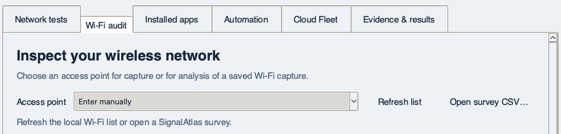
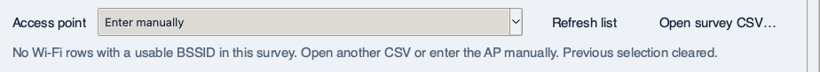

RedAgent 0.4.0 development preview · November 20, 2026
Choose a Wi-Fi access point
Fill the BSSID and channel for a passive Wi-Fi audit by picking a radio from a list. Two radios can share a network name. The BSSID identifies which one you selected.
The picker is in development source 7aaad23. The November 11 pilot installer predates this feature.
1. Load the access points
Open Wi-Fi audit and leave Test mode on Capture only. Click Refresh list to read the Wi-Fi data available to this computer. On macOS, allow Location access if prompted, then refresh again. Windows uses its Wi-Fi list. Linux uses NetworkManager’s cached list.
To use a saved SignalAtlas observations CSV, choose Open survey CSV…. This also works offline. You can follow the screenshots with the synthetic practice survey.

2. Select the radio
Open Access point. Choose the row with the BSSID you want. In the practice survey, both rows are named Training Lab. Choosing the address ending in 10:02 fills AP BSSID with 02:00:00:00:10:02 and AP channel with 36.

For a passive capture, enter the local Capture adapter separately. For an existing capture, choose Analyze saved Wi-Fi capture… to use the selected BSSID. Selecting a row starts neither operation.
3. Recover an empty list or use manual entry
If the local list is empty, check that Wi-Fi is on and the OS permits Wi-Fi identity access, then click Refresh list. If a survey has no usable Wi-Fi BSSIDs, open another file or choose Enter manually and type the BSSID.

Enter manually restores the BSSID and channel you entered before choosing from the list. Reconnect modes also use manual values. The local password-candidate action is available with manual entry.